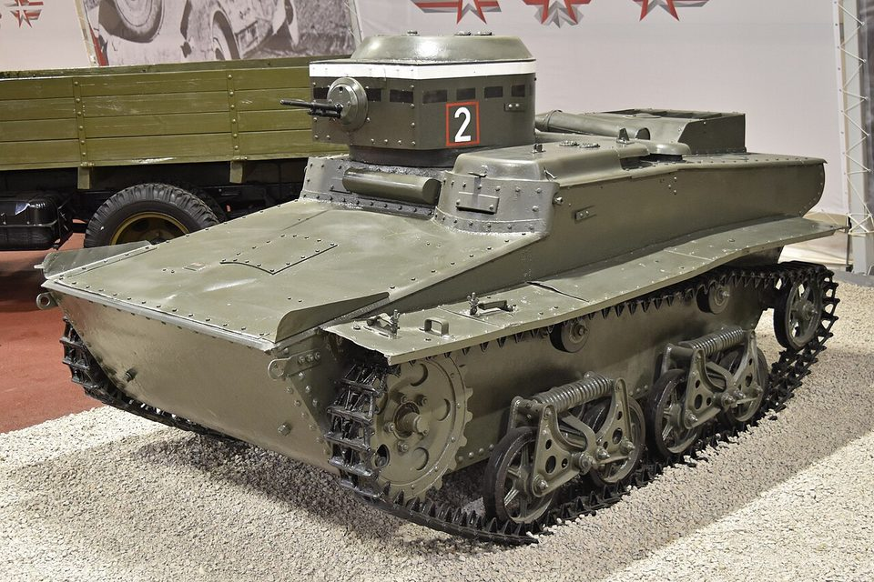
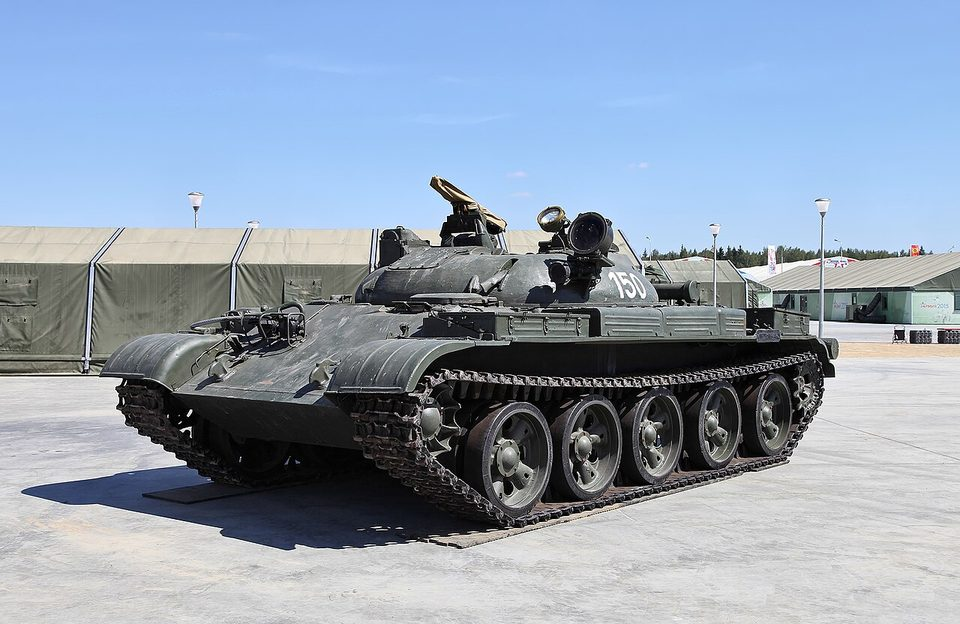

Todos los tanques › Artículos › Primeras veces: los tanques que inventaron algo
Lista
Primeras veces: los tanques que inventaron algo
Los carros de combate que introdujeron por primera vez una idea: la torreta giratoria, el transporte blindado, el cañón de ánima lisa, la construcción soldada y más.
Muchas de las soluciones que hoy parecen normales en un carro de combate aparecieron por primera vez en uno concreto.

 2 · Francia
2 · FranciaRenault FT
1917
Torreta giratoria y la disposición moderna: conductor delante, torreta en el centro y motor detrás.





 8 · Unión Soviética
8 · Unión SoviéticaT-64
1966
Cargador automático, tres tripulantes y uno de los primeros blindajes compuestos de serie.

